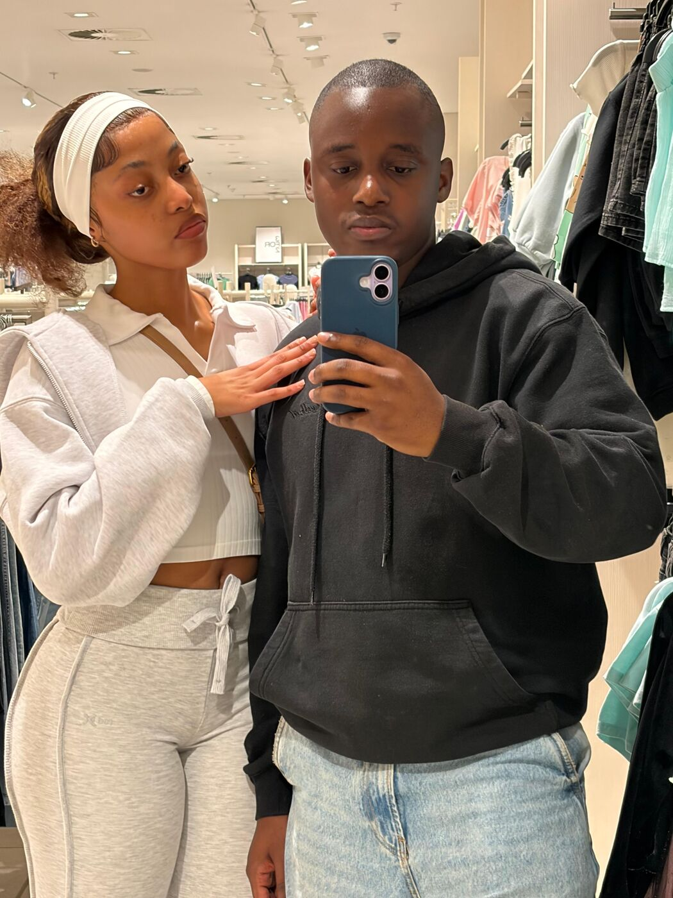

Memory one
The phone
This is one of my favourite memories, and I want to tell you why.
Months and months ago, right when you'd just started your job, you told me you were going to buy yourself this phone.
And then you just did it. You worked so hard, you saved, and you didn't let anything pull you off course. You showed me that when you want something, you go and get it.
It was never really about the phone. It was about seeing who you are: someone with goals, who keeps pushing past her own limits. That day showed me the woman you were becoming.
And look at you now. You've grown so much since the girl I first met. You started your own business. You're winning tenders. At your age you're already reaching heights most people only talk about.
I'm so proud of you, Dioca. You only keep getting better.